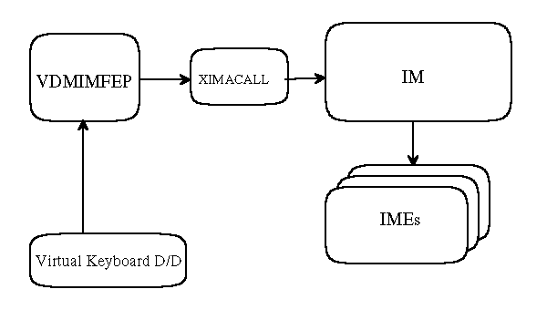

At OS/2 Warp, the shared mode DOS IM device drivers ($ias.sys, iaestub.sys) are described in DOS_DEVICE section in DOS setting.
At the IM system, the VIMM (Virtual Input Method Manager) installs the DOS IM device drivers.
PM_FEP is not supported at the IM system. At OS/2 Warp, there is PM_FEP
in DOS_FEP mode. At the IM system, PM_FEP is removed from DOS_FEP mode.
PM_FEP for IME16
PM_FEP is not supported.
OS2_FS_FEP for IM
The following shows how IM works with DOS Fullscreen Input stuffs quite simply:
To adapt to the new IM32 model, DOS Fullscreen Input stuffs need to be modified to work with its new I/F. The above chart only shows two Fullscreen Input stuffs, i.e. VDMIMFEP and XIMACALL, but the following modules are also needed to modify, in addition to OS/2 Fullscreen support:
In DOS Fullscreen, the current IM16 will be able to co-exist with the new IM32. So, the original (current IM16 support) codes must not be disabled. And they should be utilized to support the new IM32 as much as they can. Their modification should be mi nimized.
The subsequent sections explain how the IM32 works in DOS Fullscreen environment at several situations. Initialization
The initialization for the IM32 is pretty done by the OS/2 Fullscreen Input
stuff, IMREGIST.EXE, so that there is no additional initialization required
for DOS support.
Session Creation
IMDAEMON.DLL is registered for getting the session related events. At first DOS session creation, it loads VDMIMFEP for DOS Fullscreen Input handling. Once VDMIMFEP is loaded, it establishes a communication path to Virtual Keyboard Device Driver (VKBD) with DosRequestVDD for further event notifications.
Then, VKBD sends the event, VKBDEVENT_CREATE out to VDMIMFEP. During this process, VDMIMFEP calls ImOpenService API (IM private) to open a new Input Method Service for the session. As the return of this API, it gets a new handle, hIMS and stores it unti l session termination for further IM32 requests.
VDMIMFEP initializes its private data area and open a new service from XIMACALL with XimaOpen API. For subsequent IM32 requests, XIMACALL should know the IMS handle for this DOS session. So, the request block of XimaOpen is also needed to modify. The m odified block is shown in OS/2 Fullscreen Support.
XIMACALL calls ImSendEvent with the event, IM_OPENSESSION, in XimaOpen API. Now, IM32 (i.e.OS2IM.DLL) knows a new Fullscreen session is opened and prepares a new default IM Instance for the session (or hIMS).
Then, XIMACALL subsequently calls ImQuerySessionDefInstance API to get the
newly created IM Instance, i.e. hIMI, within XimaOpen. With this hIMI,
XIMACALL registers its API entry point to the IM32 using DsmRegisterFunc
API. The registered API entry then will be called
by the IM32 whenever IM/IME related events occurs, e.g. request to display
conversion strings.
Session Switch
At session switch, actually it just indicates to_Foreground or to_Background, VDMIMFEP is called by VKBD and just notifies the IM32 of the event happened. This notification is passed by ImSendEvent with the event, IM_CHANGESESSION.
Note: Either idFromSession or idToSession of IMCHGSESINFO may be
NULL under DOS Fullscreen support.
Session Termination
VDMIMFEP gets a notification from VKBD when the opened DOS session is about to terminate. With this notification, VDMIMFEP calls DeregisterMoniter function internally. As the result of this call, the VKBD receives the command, VKBDSYSREQ_MONDEREGIS and disables its event notifications, especially keyboard inputs for the session.
Once the command is handled, VDMIMFEPcalls XimaClose API. Then, XIMACALL
releases all allocated resources for this VDMIMFEP (or DOS session) with
XimaClose. It also deregisters the IM32 worker routine by DsmDeregisterFunc
with the stored hIMI. (The hIMI can be also retrieved through ImQuerySessionDefInstance.)
Then, to notify the IM32 of the session termination, it calls ImSendEvent
with the event, IM_CLOSESESSION. After XimaClose API returns, VDMIMFEP calls
ImCloseService to release the IMS handle assigned for the session.
Keyboard Input
VDMIMFEP is just like a Keyboard monitor process. It registers itself into VKBD, reads keyboard packets from the Int16 handler, processes the packets and finally writes them back to the DOS Keyboard buffer. So, applications can get the processed keyboard packets naturally.
In the current IM16 model, when VDMIMFEP receives the Keyboard packet, it is passed to XIMACALL through both XimaPreConv and XimaConv APIs. This is same as OS/2 Fullscreen support.
Under the new IM32 model, VDMIMFEP works exactly same as IMMON. When VDMIMFEP calls XimaPreConv with the packet got from VKBD, XIMACALLS converts it to the IMCHARINFO (of OS2IM) format and calls ImSendEvent with the event, IM_CHAR.
The subsequent requests, e.g. display candidate list, are passed to the
IM32 worker routine in XIMACALL registered at session creation, just like
OS/2 Fullscreen support.
CodePage Change
When a codepage (keyboard codepage) is changed, the VKBD sends a specific event, VKBDEVENT_CHG_CP (new event for the IM32 support) out to VDMIMFEP. With this event, VDMIMFEP can know the new codepage and sets it to XIMACALL by XimaSetCp API.
XIMACALL then calls ImSendEvent with the event, IM_CHANGECP to notify the
IM32 of the new code page.
Keyboard Mode Change
This is exactly same as OS/2 Fullscreen support. In order to notify the
IM32 of the current or updated keyboard modes, VDMIMFEP, actually XIMACALL
has to look at each keyboard packet, and once it changes the mode, it calls
ImSetIMMode API with the update d mode. This notification has to be made
for not only for physical mode change, but also software mode change request.
IM16 support
The new DOS Fullscreen Input stuffs support both the current IM16 and the
new IM32 models. In case of IME16 selected, they just work as the current
implementation, that is, they might not call the IM32 for most of their
processing. When IME32 is loaded, they cooperate with the IM32 (i.e.OS2IM)
as much as they could.
Free PS Support (Setting Dialog)
This is the same requirement as OS/2 Fullscreen support. please refer
OS/2 Fullscreen support.
OS2_FS_FEP for IME16
This is the same support as current IME.
DOS_FEP for IM
VIMM mechanism supports that IAE request of VDM is routed to IME32.
DOS_FEP for IME16
Current design is used. Coexistence of the stub for IME16 and new IM will be considered.
User can select DOS FEP by writing DOS Device in DOS Setting. When IAESTUB.SYS is written in DOS Device, 16 bit IME is used. When IAE4IM.SYS is written in DOS Device, 32 bit IME is used.